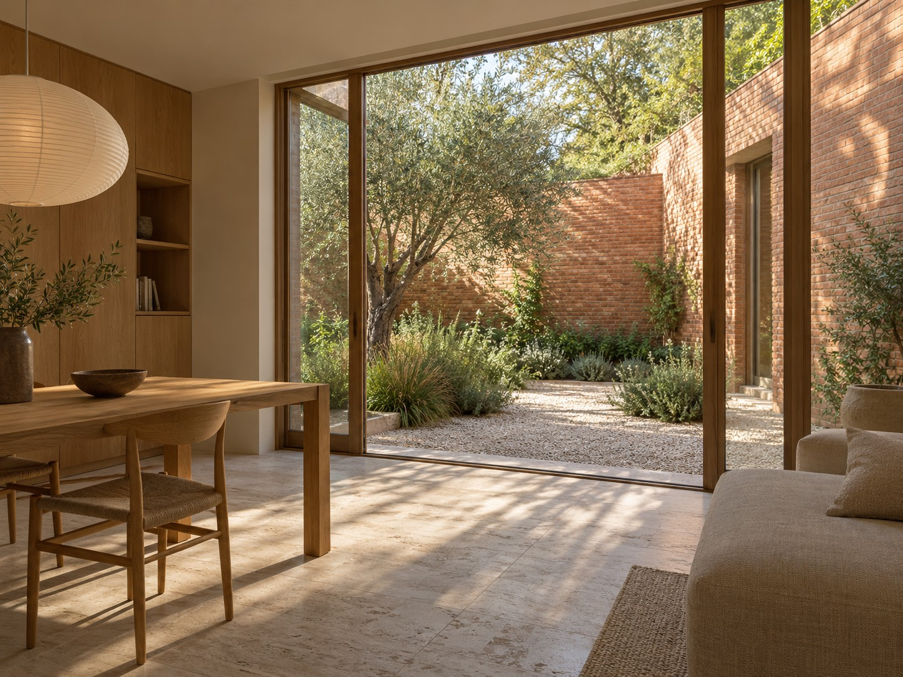

Een huis dat past
bij hoe je woont.
Ontwerp voor nieuwbouw, verbouwingen en interieurs.
Bekijk de projectenWonen, binnen en buiten.
Twee ontwerpstudies waarin de tuin een belangrijk deel van het huis wordt.

Wat wil je veranderen aan je huis?
Meer licht in de woonkamer, een extra kamer of een keuken die wél lekker werkt. We beginnen bij wat je nodig hebt en bekijken daarna wat er mogelijk is.
Je hoeft vooraf nog geen compleet plan te hebben. Foto’s, een plattegrond en je eerste ideeën zijn genoeg om het gesprek te beginnen.
Bespreek je plannenVan idee naar ontwerp.
Je weet vooraf waar we naar kijken en welke keuzes er nog gemaakt moeten worden.
Kennismaken en je huis bekijken
We bespreken je wensen, bekijken de bestaande situatie en bepalen samen welke vragen het ontwerp moet beantwoorden.
Schetsen en keuzes maken
Met schetsen en plattegronden vergelijken we de mogelijkheden. We bespreken wat een indeling betekent voor licht, gebruik en materiaal.
Het plan verder uitwerken
Als de richting klopt, werken we de gekozen indeling en details uit. We leggen vast wat nodig is voor de volgende stap.
Vertel over je plannen.
Gaat het om een verbouwing, een nieuw huis of een interieur? Stuur gerust je eerste ideeën mee.